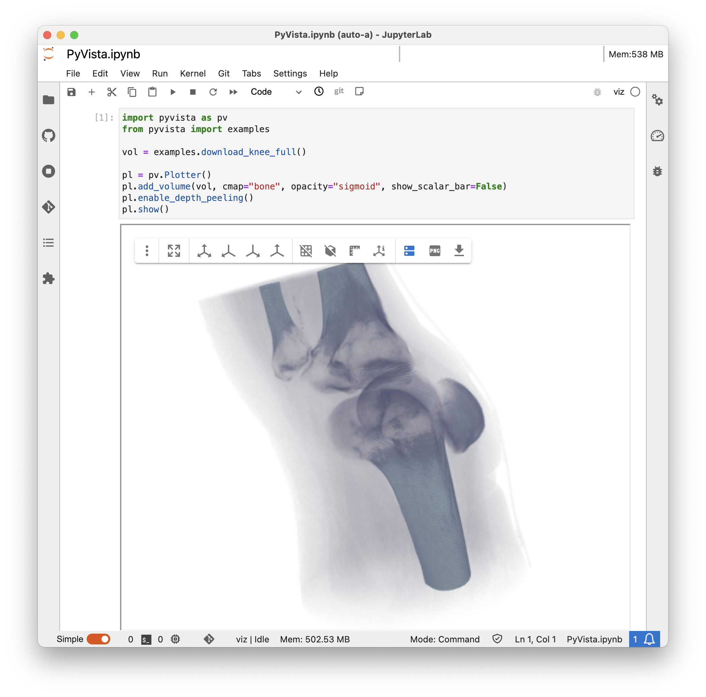

JupyterでPyVistaを使う#
PyVistaはJupyterノートブックで使用するように設計されています．チュートリアルのこのセクションでは，JupyterノートブックでPyVistaを使用するための基本を説明し，Jupyterで動作するようにPyVistaを設定する際の参考ガイドを提供します．
PyVista用Trame Jupyterバックエンド#
PyVistaには， Trame を使用してJupyter環境内で完全な機能を持つプロットを表示する機能があります．我々は，PyVistaとTrameをペアリングするメカニズムを提供し，PyVistaプロッタをサーバサイドレンダリングとクライアントサイドレンダリングの両方でWebコンテキストで使用できるようにします．
Trameバックエンドのサーバーサイドレンダリングモードは，現在のレンダーウィンドウをJupyter内のcanvasにストリーミングし，canvasからのユーザーアクションをVTKレンダーウィンドウに戻すことで動作します（これは， trame-vtk 内の vtkRemoteView によって、フードの下で行われます．
例えば，この2つのコードはJupyterのインタラクティブキャンバスを表示します:
import pyvista as pv
sphere = pv.Sphere()
# short example
sphere.plot(jupyter_backend='trame')
# long example
plotter = pv.Plotter(notebook=True)
plotter.add_mesh(sphere)
plotter.show(jupyter_backend='trame')
便宜上， trame を有効にすることもできます(これがデフォルト):
import pyvista as pv
pv.set_jupyter_backend('trame')
Trame Jupyter モード#
PyVista Trame jupyterバックエンドは，3つの動作モードを提供します（技術的には3つの別々のバックエンドを選択できます）:
'trame': クライアントレンダリングモードとサーバーレンダリングモードを切り替えることができるビューを使用します．'server': 純粋にサーバーレンダリングのビューを使用します．'client'：純粋なクライアントレンダリングのビューを使用します（一般的に仮想フレームバッファなしで安全）
set_jupyter_backend() を使用するか， show() 呼び出し時に jupyter_backend を渡すことでバックエンドを選択することができます．
import pyvista as pv
pv.set_jupyter_backend('client')
pv.Cone().plot()
import pyvista as pv
pv.set_jupyter_backend('trame')
pl = pv.Plotter()
pl.add_mesh(pv.Cone())
pl.show(jupyter_backend='client')
インストール#
pipを使って，次のようにjupyter環境をセットアップすることがでます:
pip install 'jupyterlab' 'pyvista[all]'
リモートJupyterHubs#
リモートでホストされているJupyter（docker，クラウドJupyterHubなど）でPyVistaを使用する場合は，Trameバックエンドと jupyter-server-proxy または trame-jupyter-extension とペアリングする必要があります．
これらのツールを使うと、PyVistaのレンダーウィンドウをJupyterに直接埋め込むTrame Webアプリケーションに接続することができます。 これらの仕組みがないと、サーバ接続の問題が発生したり、PyVistaプロッタが表示されるはずの404ページが表示されたりすることがあります。
Jupyter-Server-Proxy#
Jupyter Server Proxy を使用すると，ノートブックと一緒にPyVistaプロッタのビューをホスティングしているTrameサーバにアクセスし， Jupyterから直接認証されたウェブアクセスを提供することができます．
注釈
将来のバージョンの wslink (Trameのサーバーの背後にある駆動メカニズム)では，サーバーが Jupyter Comms を介して通信できるようなサポートを追加し，セカンダリWebサーバーの必要性を回避する予定です．
リモート環境で jupyter-server-proxy を使って動作するように PyVista と Trame を設定するには，PyVista のグローバルテーマでいくつかのオプションを設定する必要があります．
pyvista.global_theme.trame.server_proxy_enabledpyvista.global_theme.trame.server_proxy_prefix
デフォルトの server_proxy_prefix は '/proxy/' で，ほとんどのリモートJupyter環境やDocker内での使用にはこれで十分です．
これは，環境変数で設定することもできます:
export PYVISTA_TRAME_SERVER_PROXY_PREFIX='/proxy/'
JupyterHubのデプロイメントではプレフィックスを変更する必要があります．
MyBinderでは、 JUPYTERHUB_SERVICE_PREFIX の文字列の前に '/proxy/' を付ける必要があることが多いです．これにより，接頭辞にユーザIDがURLに含まれるようになります． PyVista では，この変数があるかどうかを自動的にチェックし， server_proxy_prefix の前に追加します．
Trame-Jupyter-Extension#
Trame Jupyter Extension は、WebSocket接続を個別に作成する代わりに、既存の Jupyter Comms インフラストラクチャ上でtrameサーバーとクライアントの通信を可能にします。
この拡張機能を使うことで、セカンダリウェブサーバーが不要になり、 jupyter-server-proxy が不要になります。
pipを使って、拡張機能をインストールすることができます:
pip install trame_jupyter_extension
Jupyter Lab 3.xを使用している場合は、拡張機能のバージョン1.xをインストールしてください:
pip install "trame_jupyter_extension<2"
拡張機能がインストールされたら、次のフラグを True または False に設定することで、PyVista がその拡張機能を使用するかどうかを選択できます: